After the flood, Tata Tea hands its media to the makers of Assam. Behind the campaign, a system tracks each maker’s recovery and decides how people can help: lend, pre-order or buy. Never donate.
Context
Every monsoon, floods in Assam shut workshops, shops and homestays. The news moves on in days. Reopening takes months.
Problem
Flood appeals ask for donations. That casts makers as victims, ends the relationship at the payment, and does nothing to bring their customers back.
What I designed
A campaign, a maker platform and the rules between them. Every piece of Tata Tea’s media carries one QR. It lands on verified makers, and each maker’s status decides what money can reach them.
Status
Speculative. An M.Des project for Designing Communication Ecologies at UPES. Not tested with makers or buyers; makers and figures are illustrative.
The problem
Assam's floods are covered as a tragedy, and forgotten as an economy.
- 01Attention is short. The news moves on in days. Clearing silt, repairing looms and winning back customers takes months.
- 02Charity sets the wrong role. Appeals cast Assam as a victim and the audience as a donor, and the relationship ends with the payment.
- 03Makers have no reach. Weavers, grocers and homestays can't reach buyers outside the state when they reopen.
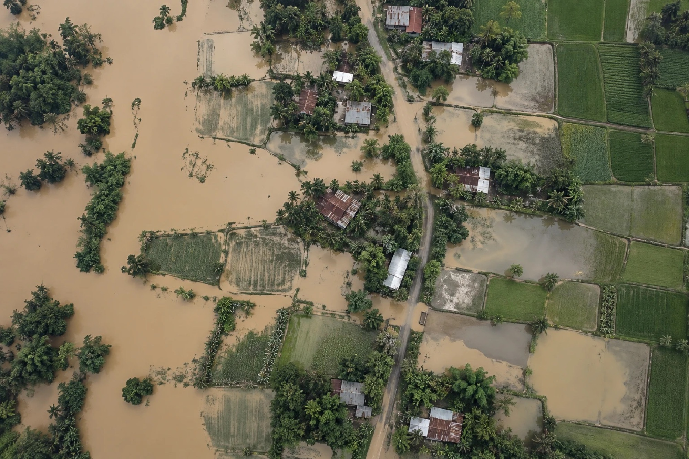


A flood gets ten days of news. Reopening takes ninety.
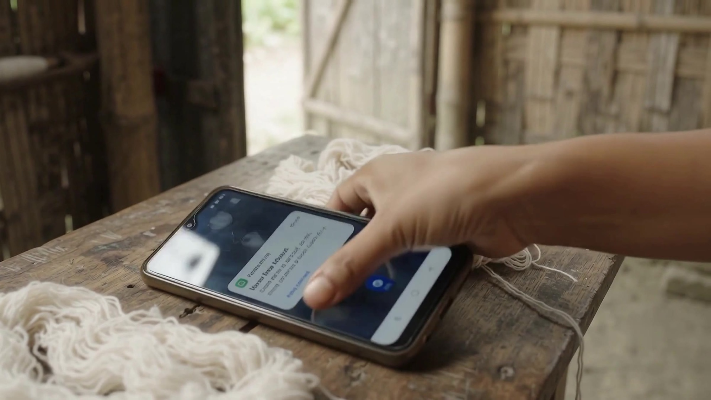
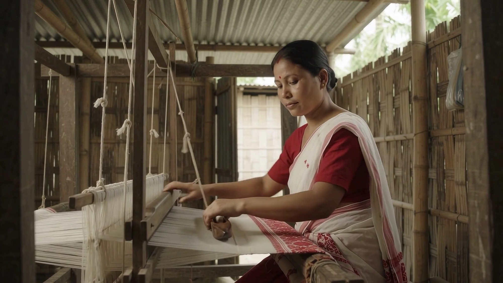
Insights
People want to help. They just don't want it to end at a donation.
- 01A purchase keeps the relationship going. A donation is one moment. An order brings the buyer back, and the maker along with them.
- 02Tea is already the bridge. Assam reaches most Indian homes every morning, in a cup. The link exists; it just isn't visible.
- 03Dignity comes from trade. Makers want to be seen as producers with something to sell, not as people who need saving.
Producer,not victim.
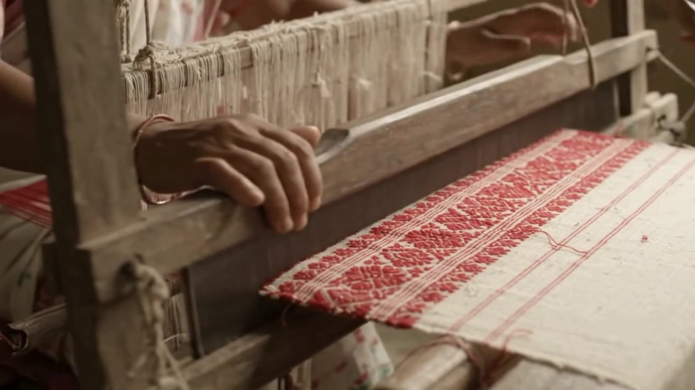
Tata Tea hands over its packs, billboards, shelves and app slots to makers for ninety days.
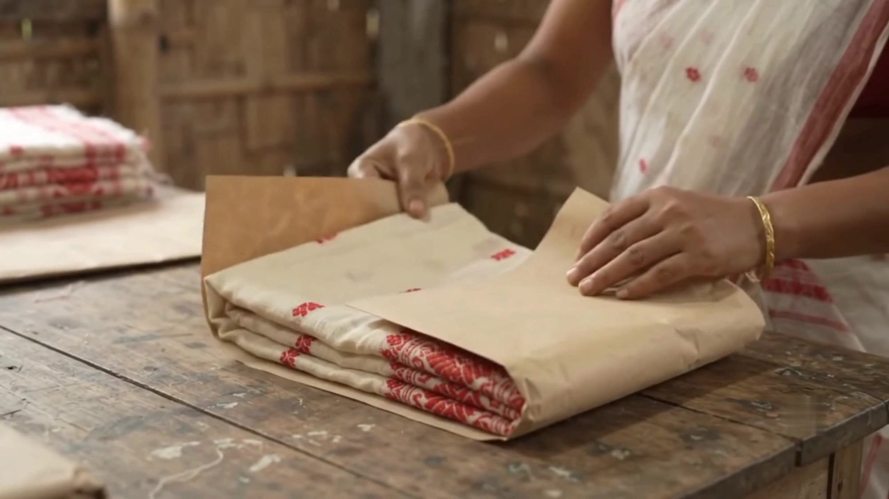


Why Tata Tea
The brand already carries Assam into the home.
- 01Assam is in the product. Tata Tea Premium is a strong Assam CTC blend, and Tata's tea business grew out of Assam's estates.
- 02It has earned a public voice. Jaago Re showed the brand can speak on civic issues and still be believed.
- 03It owns the media. Packs, shelves, outdoor and digital reach at national scale. That's the infrastructure Choose Assam hands over to makers.
- 04“Desh ki Chai” fits. A national daily ritual is the right place for one region's recovery to become everyone's business.
The system
The media brings people in. The platform decides where their money can go.
Every piece of Tata Tea’s media carries the same QR. It lands on the maker platform, where each maker’s status sets which actions are open. The maker collective verifies makers and posts their updates, and those updates feed back into the pack and social.
Reach · Tata Tea’s media
- Film60 seconds, told once at scale
- SocialMaker updates, every week
- PackIn the kitchen every morning
- ShelfEnd-caps in stores
- OutdoorBillboards that name a maker
Bridge
- One QRSame code on every surface, one destination
Platform · the microsite
- BuyFrom makers who are open
- Pre-orderPay now, goods later; funds working capital
- Lend or backThrough regulated partners
Rules
- Status engineClosed to Open; sets which money can reach a maker
- Trust ledgerPublic proof for every maker
Ground
- Maker collectiveVerifies makers, posts updates
- MakersCraft, food, homestays
- Regulated railsEscrow, a licensed P2P lender, the Social Stock Exchange
Maker updates feed the ledger, the pack and social
Hover or tab to a part to see what it connects to
The status engine
Money unlocks as a maker moves from Closed to Open.
This is what lets someone trust where their money goes. Nobody can buy from a maker who can’t ship yet, and loan repayments only start once the maker is selling again.
 ClosedDay 1
ClosedDay 1- Released
- Nothing yet. The collective verifies the maker and lists them.
- You can
- Lend
 RebuildingDay 14
RebuildingDay 14- Released
- Repair funds, for silt, looms and stock
- You can
- Lend
 ProducingDay 40
ProducingDay 40- Released
- Working capital, from pre-orders
- You can
- Pre-order, lend
 OpenDay 90
OpenDay 90- Released
- Sales go straight to the maker. Loan repayments begin.
- You can
- Buy, pre-order
Backing makers
Keep the idea of investing. Change the structure.
Investing in a maker sounds right, but equity crowdfunding isn’t legal in India. SEBI calls it “unauthorised, unregulated and illegal”, and its 2014 proposal is still not regulation. So backing runs through three routes that are legal.
Backing the collective gives Tata a regulated, auditable way to anchor the fund, a stronger story than “we donated”.
What builds trust
- 01Verification. The collective checks every maker in person before listing. Each listing shows their Udyam registration and any GI tags.
- 02Milestone release. Money unlocks by status, as above. Nothing reaches a stage the maker hasn’t reached.
- 03A public ledger per maker. Orders fulfilled, money received and used, repayments made, and photo updates at 30, 60 and 90 days.
- 04Risk labels and a grievance path on every loan, because the platform can’t guarantee repayment.
Touchpoints
Six touchpoints, each with one job.
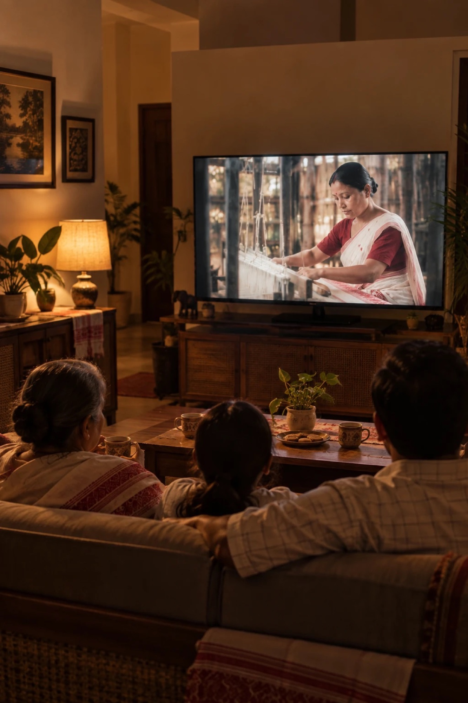
Cinematic filmReach: tells the story once, at scale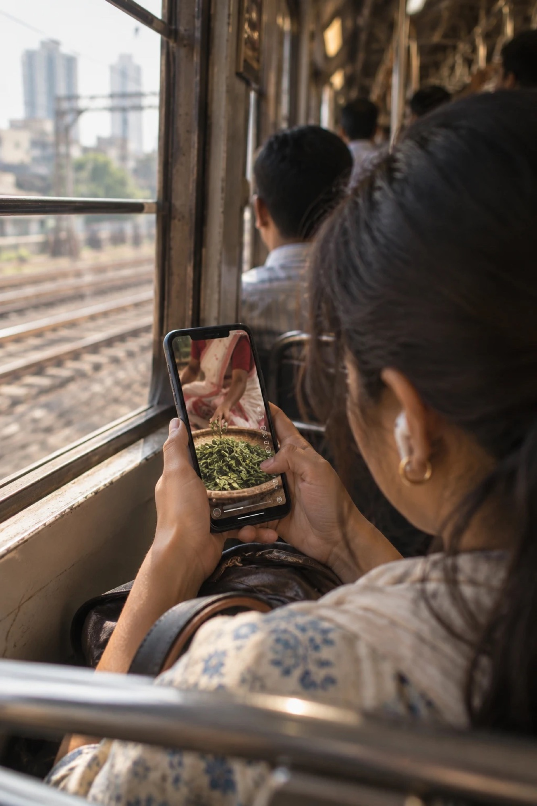
Social mediaReturn: maker updates bring people back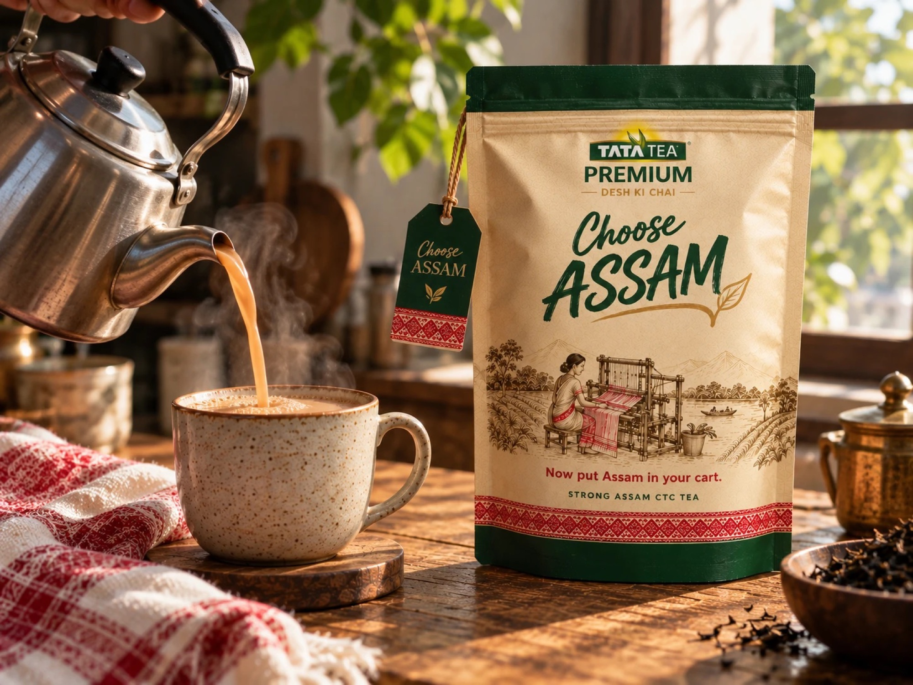
PackagingEncounter: in the home, every morning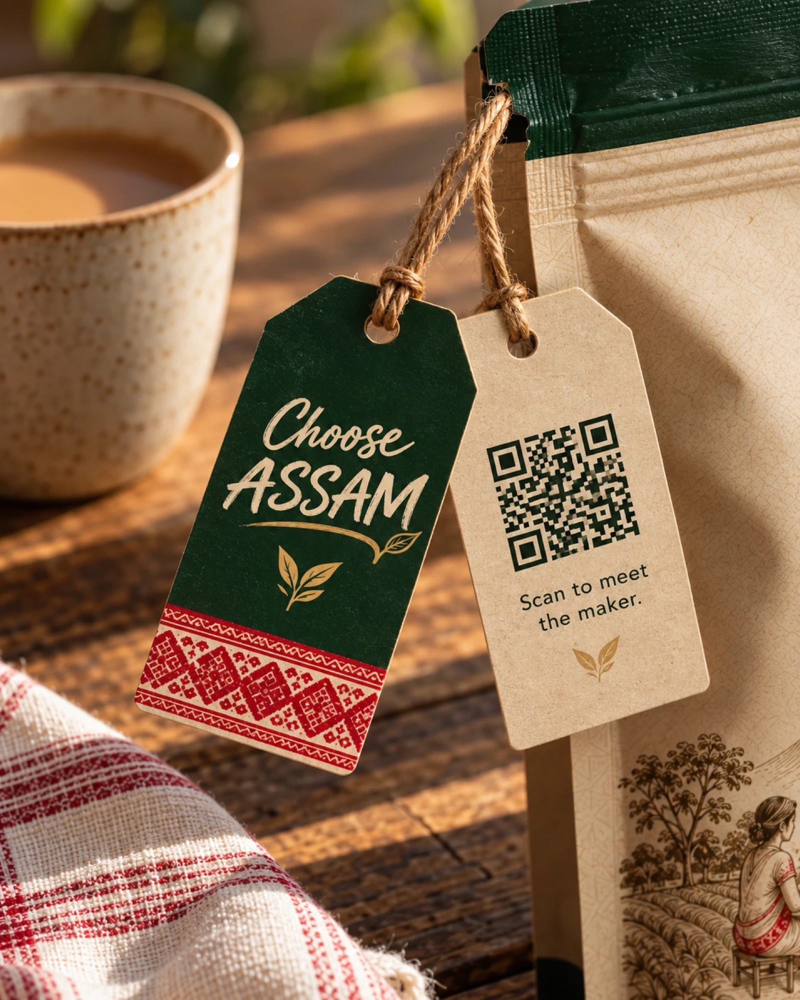
QR codeBridge: one scan from any surface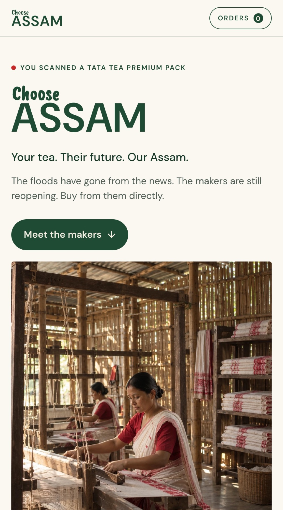
WebsiteAction: lend, pre-order, buy BrandingConsistency: one lockup everywhere
BrandingConsistency: one lockup everywhere
Identity
One wordmark that never changes, and a craft band that changes with every edition.
The gamosa can’t carry the whole identity. Each pack edition takes its band from one community’s own material and links to that community’s makers on the platform. The pack becomes a series worth collecting, which gives people a reason to come back.
- Assam Green#1F4B34
- Warm Ivory#F4EFE3
- Muga Gold#C8A46A
- Gamosa Red#C62828
The constant · One lockup, four colours, on every touchpoint
The editions · Planned, not yet designed
The tea community edition is the centrepiece, and it has to be co-authored. A tea brand using tea-community imagery will rightly be questioned, given the history of estate labour, so the co-authorship shows on the pack and on the site.
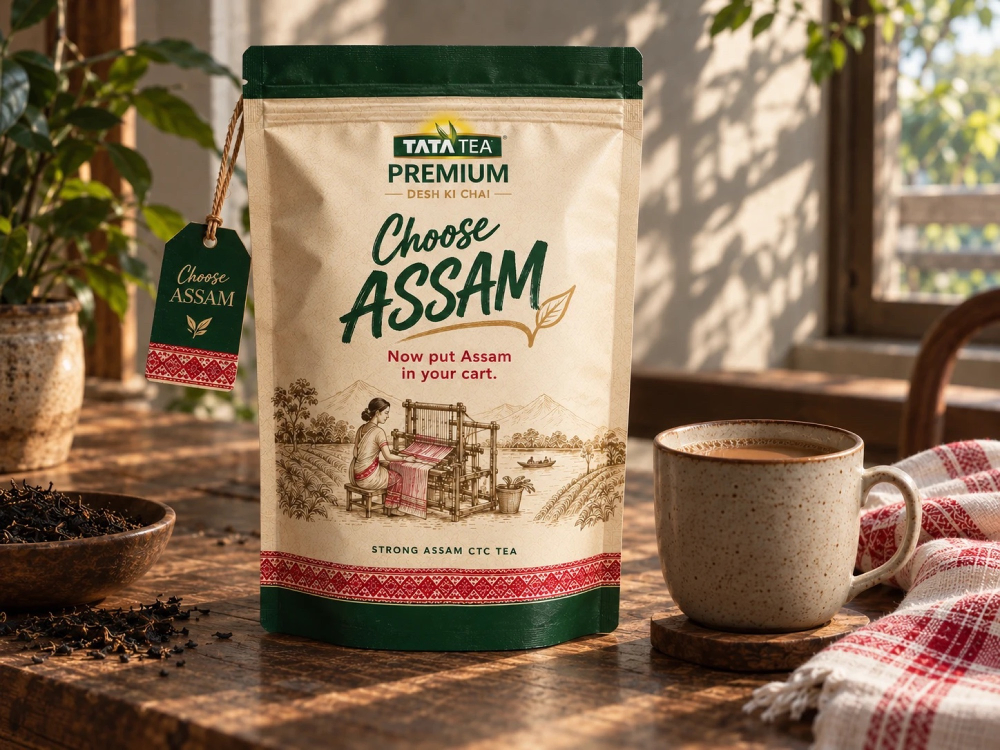
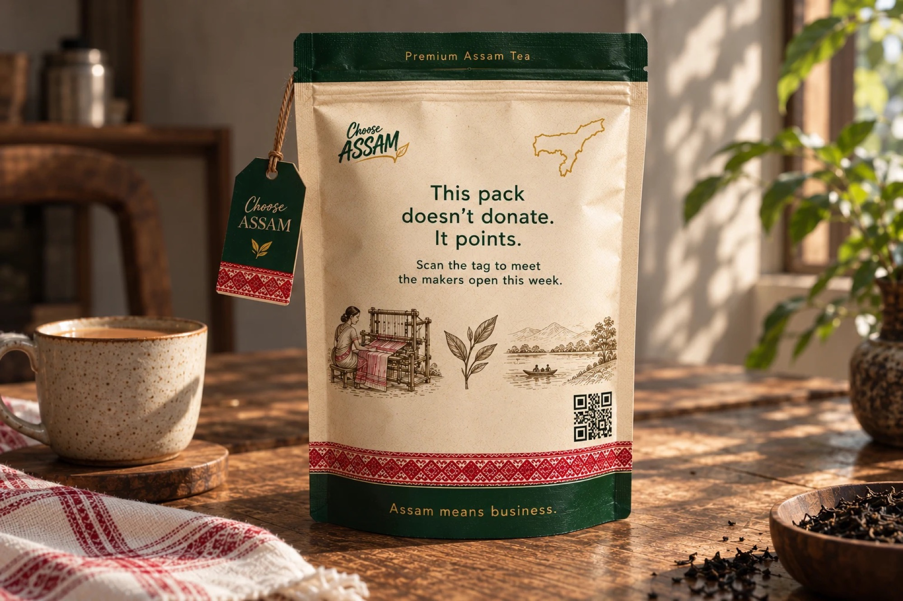
This pack doesn't donate. It points to the makers who are open this week.
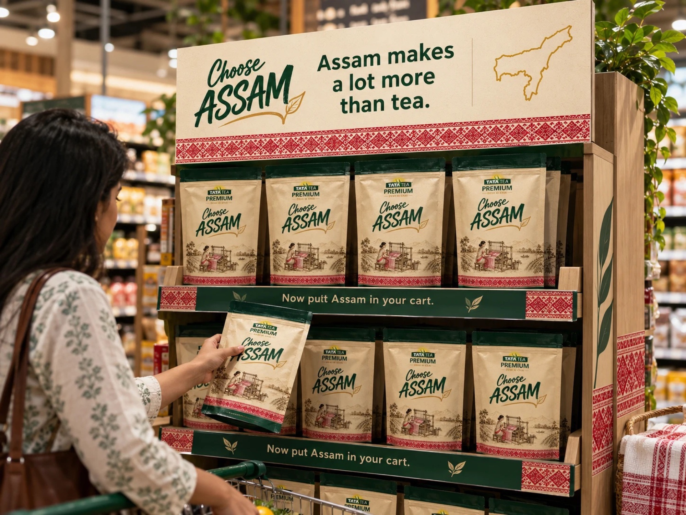
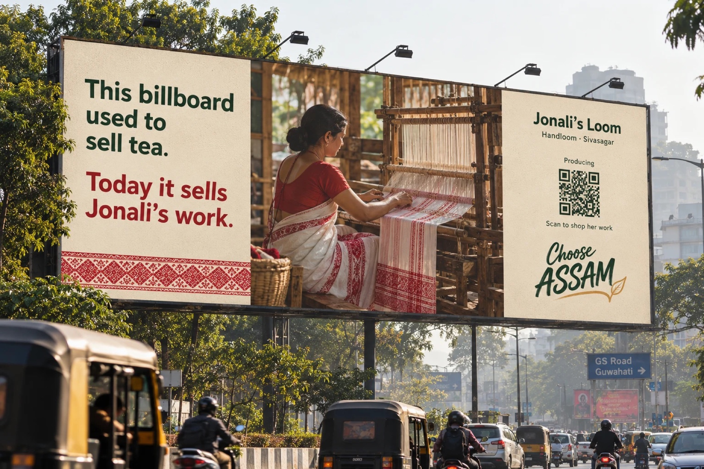
One scan from the pack lands here: the makers open this week, and a way to order.
Microsite · live, scroll insideOpen full screen ↗
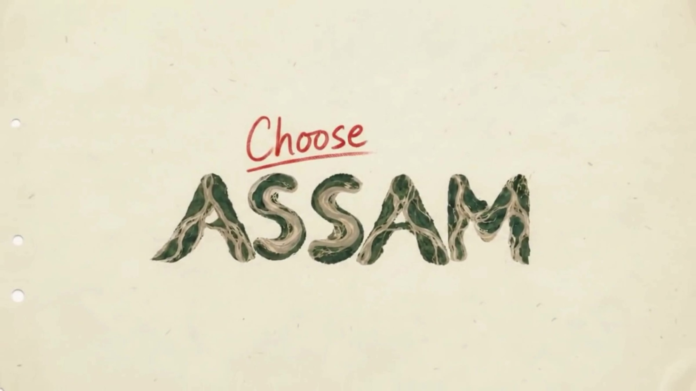
Constraints and tradeoffs
What I chose, and what it cost.
What I’d fix next
The pack still contradicts itself in five places.
It reads as generated, not designed. The fix is to build it flat from a dieline, print one and photograph it. That print is also the first test on the ground.
And on the microsite
- 01Grow from four makers to about 24 across the editions above, filtered by craft, district and status, on a map of Assam.
- 02Give each maker a page with their status timeline, their ledger and the three actions. Today a Rebuilding maker still shows Pre-order, which the rules above don’t allow.
- 03Replace “Makers and statuses are illustrative” with the name of the verification partner. That is the line a backer actually reads.
- 04An Assamese-script version of the wordmark.
Sources
Where the problem, insights, brand fit and backing routes come from. The campaign, its figures and its makers are speculative.
- Assam State Disaster Management AuthorityFlood Reporting and Information Management System (FRIMS), daily flood reports
- Tata Consumer ProductsTata Tea Premium “Desh ki Chai” positioning; Jaago Re campaign; annual reports on tea sourcing
- News coverage of Assam's monsoon floodsUsed to compare the length of media attention with the time recovery takes
- Belch & BelchAdvertising and Promotion: An Integrated Marketing Communications Perspective
- Clow & BaackIntegrated Advertising, Promotion, and Marketing Communications
- Sullivan & BochesHey Whipple, Squeeze This
- McDougallMedia Literacy for the Communication Ecosystem
- InCorpXCrowdfunding in India: the SEBI framework
- Invest IndiaCrowdfunding in India
- Rang DeRBI P2P lending compliance
- IES ArthapediaPeer-to-peer lending
- IndiaCorpLawRBI Directions on P2P lending
- S.S. RanaCSR through ZCZP instruments on the Social Stock Exchange
- Client
- Tata Tea Premium
- Project
- Designing Communication Ecologies · M.Des, UPES
- Role
- Concept, system design, art direction
- Deliverables
- System · Film · Pack · OOH · Web